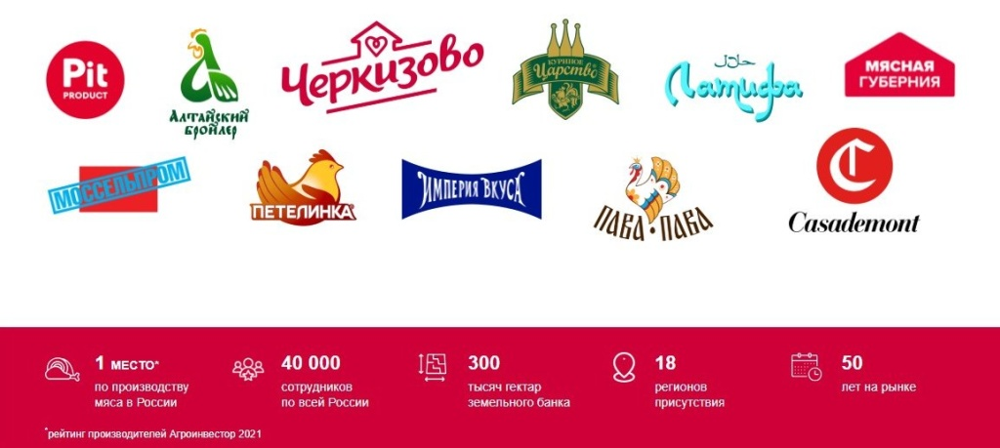
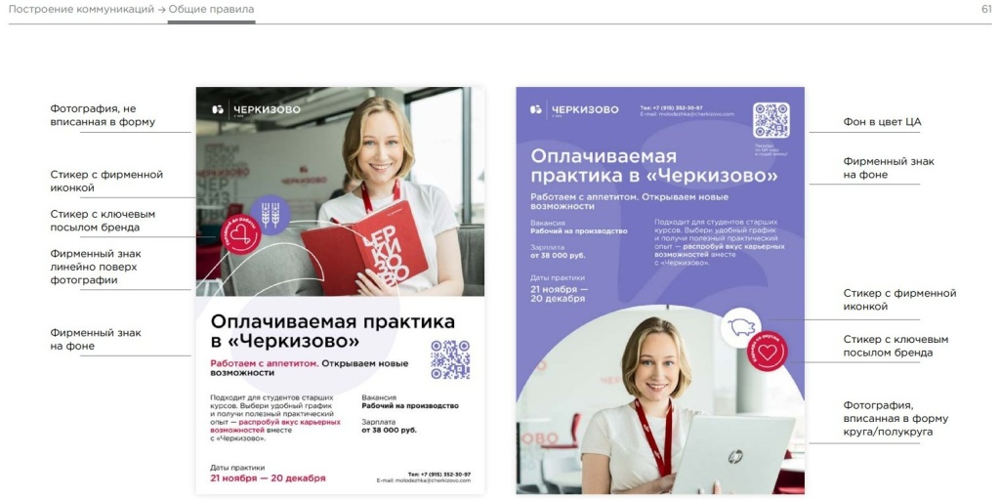
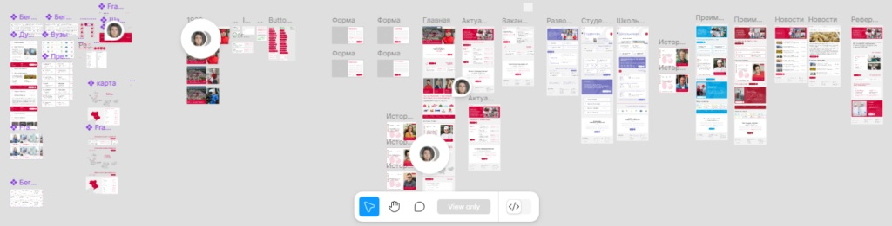
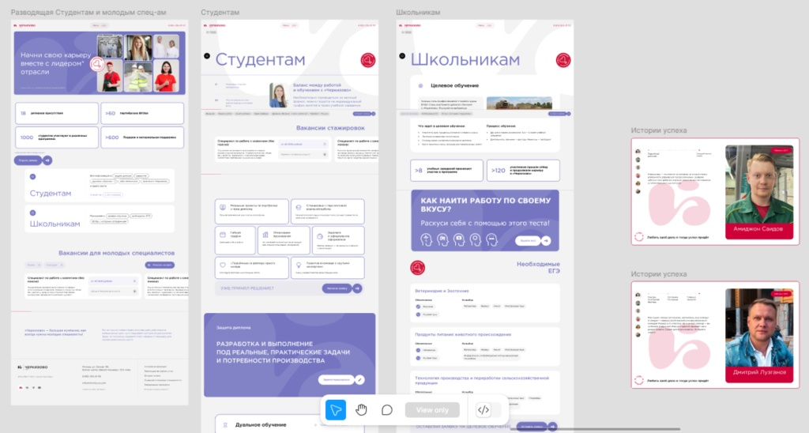
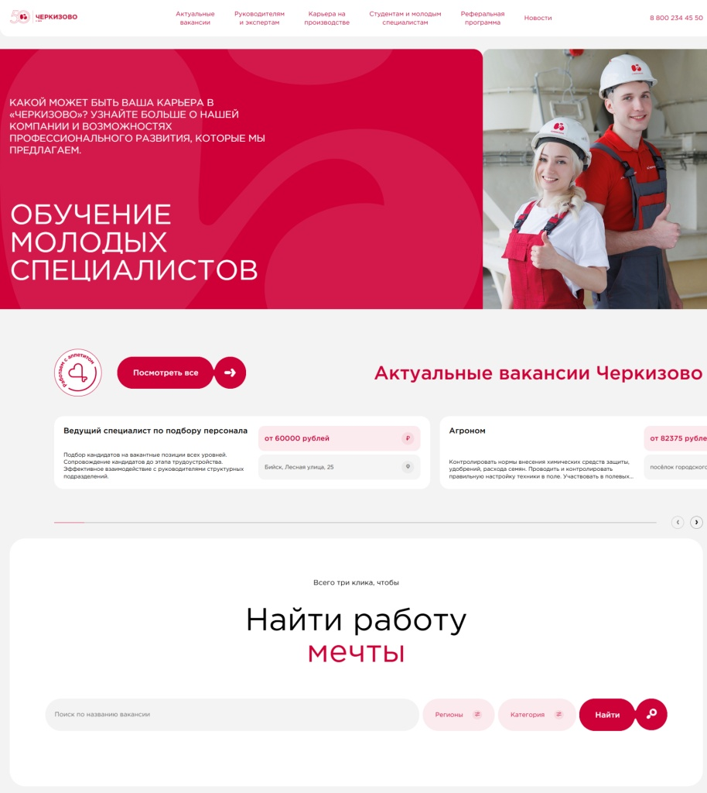
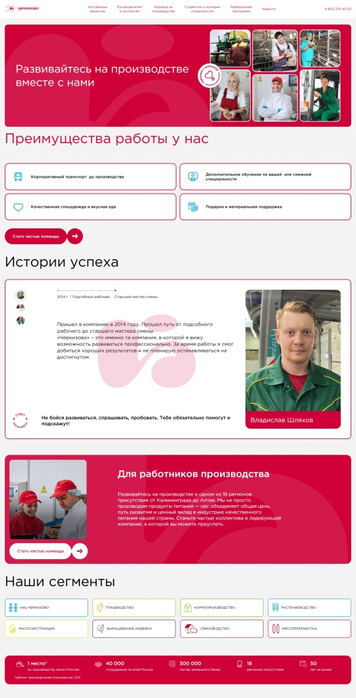
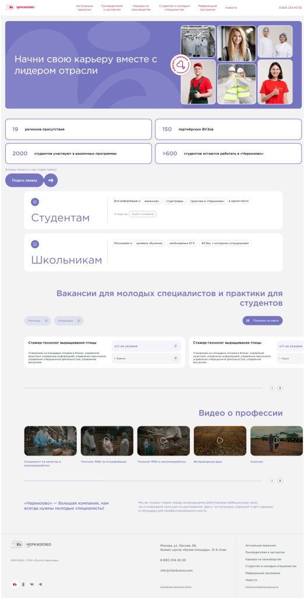
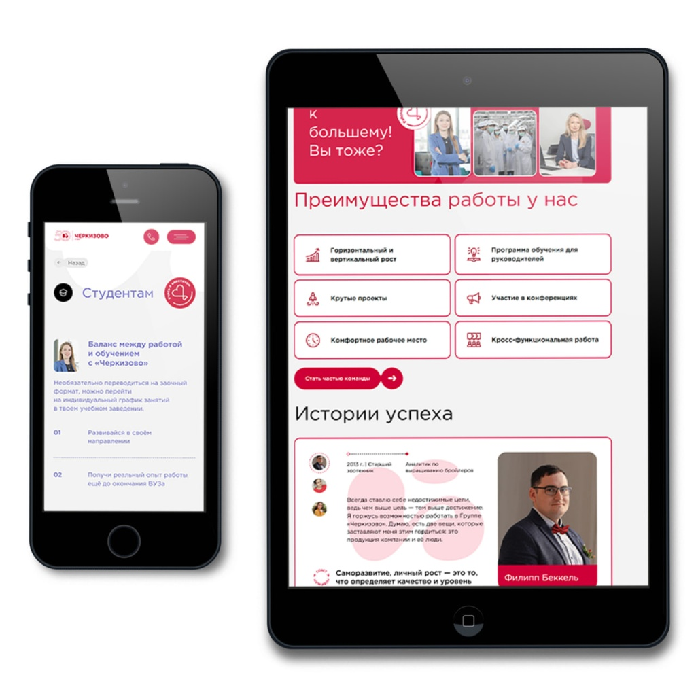
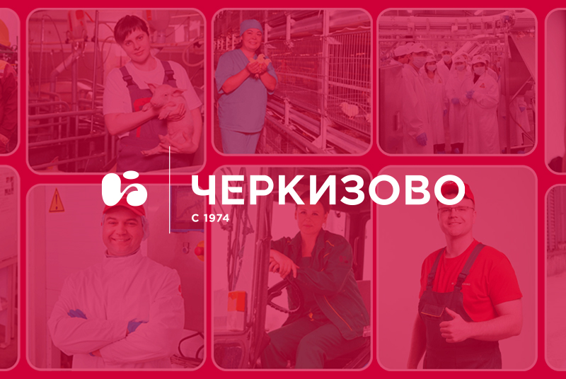

01
Мэтч профессии и призвания: карьерный портал для «Черкизово»
Разработать карьерный портал, который объединит вакансии, корпоративную культуру и преимущества работы в «Черкизово» для соискателей по всей стране. Сфера Агропромышленность, производство продуктов питания Сайт https://vacancies.cherkizovo.com/ Дата 22.11.2023 Заказать проект Задать вопрос
НаправлениеРазработка
СфераАгропромышленность, производство продуктов питания
Дата22.11.2023

02
Клиент
Группа предприятий «Черкизово» — один из лидеров пищевой промышленности России (по данным рейтинга крупнейших компаний АПК России. РБК 2022).
В «Черкизово» работают более 40 000 сотрудников в 18 регионах страны. В 2024 году компания отметила юбилей — 50 лет производства продуктов питания, которые любят и ценят миллионы потребителей.

о компании
03
Задача
До этого проекта у «Черкизово» не было карьерного сайта. Вакансии публиковались на HH, стажировки — в презентациях, а ценности и культура компании существовали внутри организации. Нам требовалось собрать всё в одном месте и сделать не просто корпоративный сайт, а полноценную точку входа для будущих сотрудников.
Поставили цель: сайт должен вдохновлять и информировать одновременно, помогать найти подходящую вакансию, рассказать о масштабах компании и убедить, что в «Черкизово» есть место каждому — от стажера до руководителя.
04
Аналитика и дизайн
Проект делали с нуля: от аналитики и структуры до контента и CMS. Изучили, как устроены корпоративные сайты в других крупных компаниях. Собрали pain points у целевой аудитории, провели интервью с представителями различных отделов «Черкизово», чтобы понять их потребности и ожидания от нового ресурса. Проанализировали восьмидесяти страничный брендбук, чтобы сайт точно отражал тональность и визуальный стиль бренда работодателя — и стал логичным продолжением внутренней культуры компании в цифровой среде.

брендбук
Один из ключевых фокусов в дизайне — удобство и ясность. Каждая секция построена так, чтобы пользователю было удобно «сканировать» страницу и быстро находить важное. Мы стремились к визуальной чистоте, понятной иерархии и легкой подаче даже насыщенного контента — всё, чтобы путь к новой работе начинался без лишних сложностей.


макет


макет
Структура, в которую легко нырнуть
В структуре сайта можно быстро найти нужную информацию. Главная страница задаёт тон и помогает сориентироваться: здесь и фильтр по вакансиям, и карта с городами присутствия, и ответы на вопросы, которые соискатели чаще всего задают hr-специалистам «Черкизово».

Работа в компании «Черкизово»: официальный сайт вакансий
Добавили отдельные разделы с историей компании, ценностями, преимуществами и примерами карьерных маршрутов — но так, чтобы не перегрузить и не утомить.
Тексты на сайт писали так, как будто рассказываем другу о том, чем занимается компания «Черкизово», чем живут ее сотрудники, как развиваются и почему стоит работать именно здесь. Без воды, без канцелярита — с уважением к соискателю, который, возможно, совсем скоро станет частью команды.
 |  |
Работа в компании «Черкизово»: официальный сайт вакансий
Умная интеграция с HH
Кандидатам не нужно переключаться между вкладками в браузере — настроили интеграцию с HeadHunter: вакансии тянутся на сайт автоматически, отклик тоже идёт через HH. В настоящее время мы работаем над интеграцией с системой Skillaz для оптимизации процесса рекрутинга.
Поиск и сортировка на карте
Технологии — в помощь HR
Сайт работает на стабильной и такой удобной Winter CMS. Контент можно редактировать из админки, фильтровать, добавлять новые вакансии. Оформили личный кабинет, оставили подробную инструкцию — HR-команда «Черкизово» может управлять сайтом самостоятельно, без разработчиков.
Сложности и решения
Одной из главных задач было соблюдение строгих требований службы безопасности компании. Мы реализовали необходимые меры, включая защиту административной панели и настройку доступа.
С учетом постоянно растущего сегмента мобильной аудитории сайт адаптирован для различных устройств, интерфейс интуитивно понятен, с четкой навигацией и небольшим количеством анимаций, чтобы обеспечить быструю загрузку страниц.

Адаптивный интерфейс
Координация на уровне чемпионата мира
Разрабатывать корпоративный портал для крупной группы компаний — это не только про масштаб, но и про умение организовывать процессы. Мы быстро научились модерировать конфколлы на 10-20 человек, согласовывать задачи с разными департаментами и вносить регулярные апдейты так, чтобы все участники процесса были в курсе деталей.
В «Черкизово» работает классная команда: каждый специалист на своем месте, с ясной позицией и готовностью обсуждать, конструктивно спорить и искать решения. Благодаря этому проект двигался четко, без хаоса, как слаженная сборная, где все играют на результат.
Результат
Современный, адаптивный, удобный сайт, который говорит с кандидатом на одном языке. Он помогает быстрее закрывать вакансии, растить HR-бренд и вовлекать тех, кто еще не определился с выбором.
У «Черкизово» — тысячи вакансий по всей стране, и у каждой — своя история. Здесь можно вырасти от стажера до начальника смены, запустить собственный проект в крупном департаменте или стать частью научной команды. Компания предлагает стабильность, понятную систему развития, обучение и реальную возможность строить карьеру. Не на словах — на деле. Люди приходят сюда за опытом, остаются за отношением. А сайт, который мы сделали, помогает им найти друг друга.
Интересный факт: по итогам 2023 года группа «Черкизово» заняла 28-е место в ежегодном рейтинге крупнейших работодателей России, — и лучшим работодателем в АПК — составляемом HeadHunter.
Если вам тоже нужен сайт, который решает задачи бизнеса (а не просто существует), вы знаете, к кому обращаться.
Кстати, мы не только сайты делаем, но и ведем соцсети, прокачиваем SEO и настраиваем рекламу. Вот тут весь список наших услуг — посмотрите, чем еще можем быть полезны.
Галерея проекта
тяни


От имени Группы «Черкизово» хотим поблагодарить коллектив Nuts Digital Agency за работу над созданием карьерного портала нашей компании. Специалисты агентства продемонстрировали высокий уровень профессиональной подготовки и способность эффективно решать задачи в рамках установленных сроков.
Разработка мультирегионального сайта для корпорации «Девелопмент-Юг»